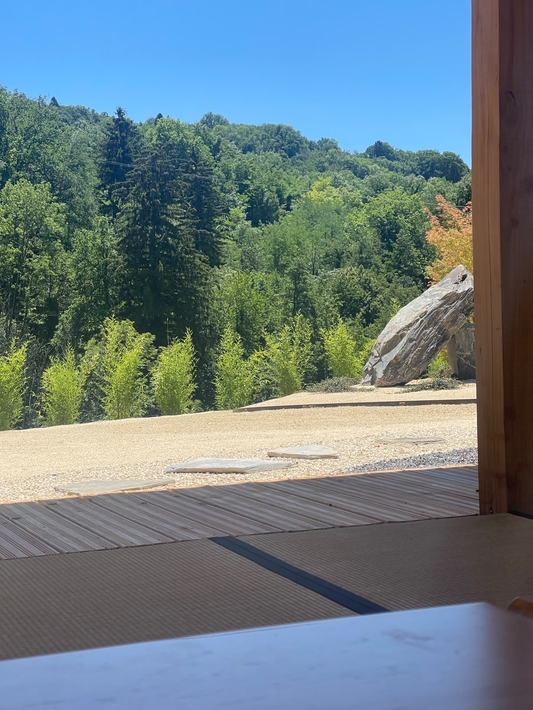
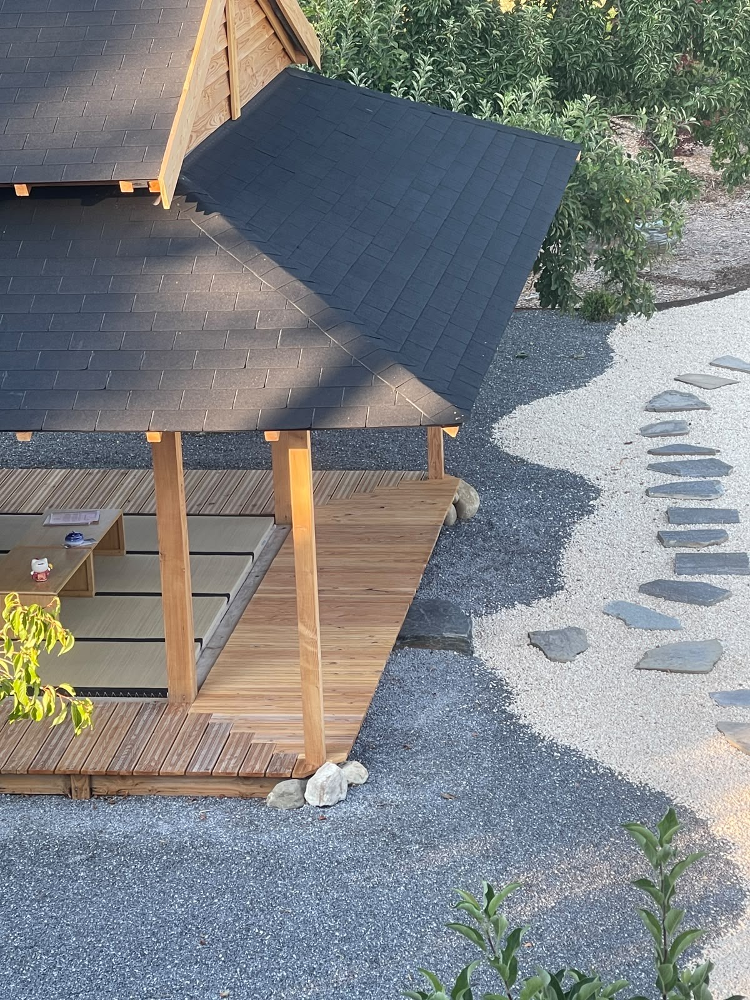

Atelier · Jardins japonais Kazoku, Thusy
Un yoga tourné vers la reconnexion au cœur, à l'âme et à l'amour, suivi d'un petit-déjeuner gourmand — dans un jardin japonais qui m'a fait chavirer.
Les infos pratiques
🗓️ Dimanche 27 septembre 2026, à 8h30
📍 Jardins japonais Kazoku, Thusy — à ~30 min d'Annecy
👥 6 personnes maximum · 💛 60 €
🤝 Avec Kazoku
(@experiencekazoku_annecy)
J'ai eu un véritable coup de cœur pour ce lieu : j'en ai le cœur qui déborde d'amour à l'idée d'y animer un atelier. C'est pourquoi je te propose un yoga tourné vers la reconnexion au cœur, à l'âme et à l'amour — un véritable « voyage au centre de ton cœur ».
On commence par une pratique de yoga douce, pour ouvrir le corps et le cœur, avant de partager ensemble un petit-déjeuner gourmand dans ce cadre magique. Un réveil sur tous les plans de l'être — physique, spirituel et gustatif. 🍵
Le lieu
Niché à Thusy, le jardin japonais Kazoku est un écrin de sérénité : pavillon de bois, jardin zen, pas japonais et végétation apaisante. Un cadre d'exception, parfait pour se déposer et vivre un moment suspendu, loin de l'agitation.


Le petit-déjeuner
Après la pratique, place à la gourmandise : un petit-déjeuner concocté par Kazoku, pour réveiller le corps et l'esprit tout en douceur. 🍵
🥐 Assortiment de 3 croissants
L'authentique · Le « moelleux moelleux » et sa confiture de saison · Le perdu à la cannelle
🍓 Salade de fruits de saison
🥣 Muesli de Thusy
mûres, noix et granola aux flocons d'avoine (mûres et noix issues du jardin Kazoku), fromage blanc
☕ Une boisson incluse, au choix de la carte
6 places seulement — écris-moi pour réserver la tienne (60 €).